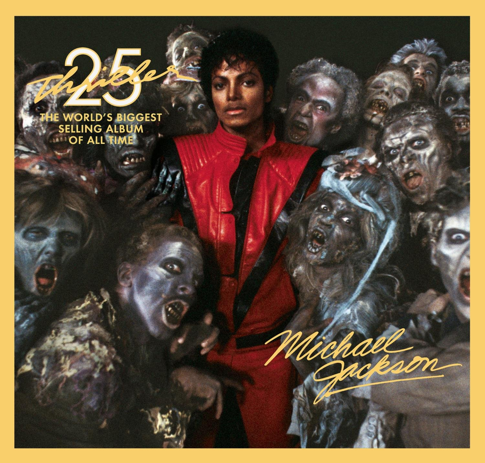
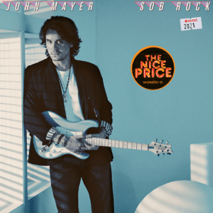
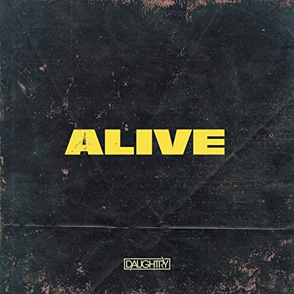
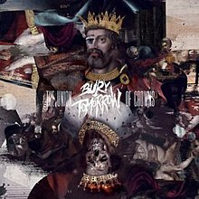
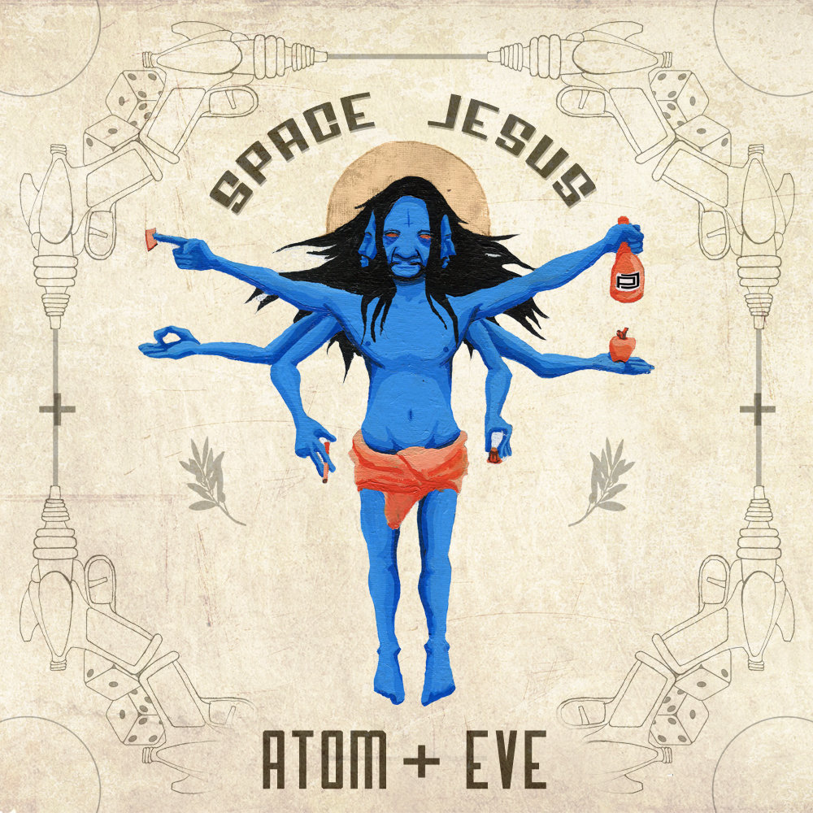
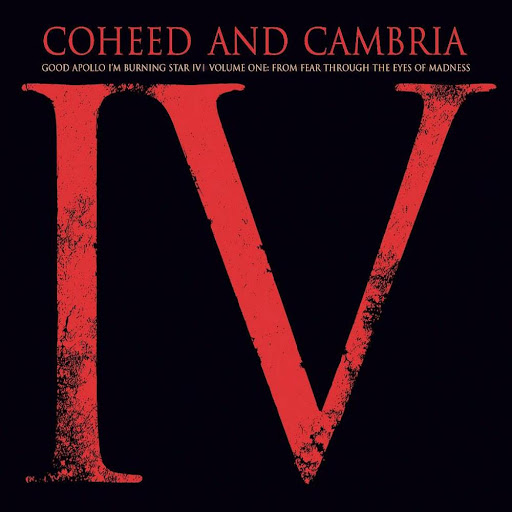
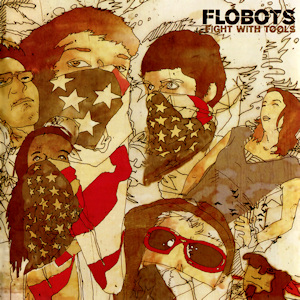
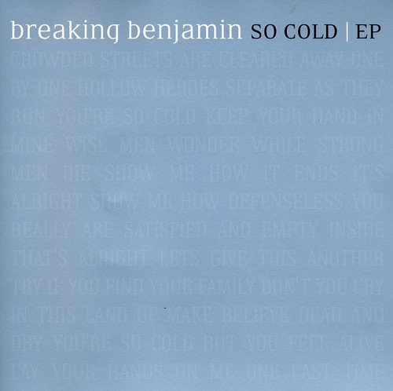
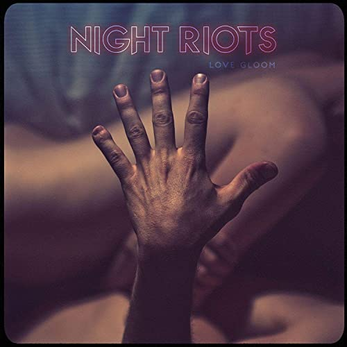

Top 10 Favorites
Music can mean a bunch of different things to people. I don't like it too quiet and need some noise. That being said, I love percussion and fast beats. Singing along isn't something I normally do because I don't listen to lyrics unless the vocalist is amazing. Below is a list of my Top 10 Favorite Songs. They are from various artists and genres so all of that information will be provided below.
| Band | Album | Song | Genre | |
|---|---|---|---|---|
| 1  |
Michael Jackson | Thriller 25 Super Deluxe Edition | Beat it | Pop Rock |
| 2  |
John Mayer | Sob Rock | New Light | Soft Rock |
| 3  |
Daughtry | Alive Single | Alive | Rock |
| 4 |
VHS Collection | Stereo Hype | Waiting on the Summer | Alternative |
| 5  |
Bury Tomorrow | The Union of Crowns | Redeemer | Metal |
| 6  |
Space Jesus, Esseks | Atom + Eve | Mom's Spaghetti(ft. Esseks) | Electronic |
| 7  |
Coheed and Cambria | Good Apollo I'm Burning Star IV Volume One: From Fear Through The Eyes of Madness | Welcome Home | Indie |
| 8  |
Flobots | Fighting With Tools | Handlebars | Rap |
| 9  |
Breaking Benjamin | So Cold EP | So Cold - Acoustic | Rock |
| 10  |
Night Riots | Nothing Personal | Nothing Personal | Indie |
These are in no particular order, just a list of my top 10 favorite songs on my playlist currently. I did pick a few from different genres just to show I don't normally stick to any one type. I listen to all types of music but as mentioned before I do enjoy percussion which is usually more common in rock. Although the list is in no particular order, let's start from the top anyway. I'll briefly describe why I chose them to appear here.
Michael Jackson's Beat it. This song is a classic and is one I do sing to. Every time I listen to it, I remember the Walk-Off scene from Zoolander. That is probably another reason why I love this song because of the memories it evokes. If I could dance, I'd dance to this song.
John Mayer's New Light starts with a great beat and draws me to listen to the song in full every time. Strangely enough, this is another song I sing along with. Maybe I sing along more than I think?... The rhythm is foot-tapping good and Mayer's voice is calming. A great song to listen to when you need to get down and study.
When I first hear Daughtry sing on the TV show The Masked Singer, I've been hooked. Alive is a great song that showcases Daughtry's skills. I listen to him mainly for his vocals. He has a very unique tone and can belt!
VHS Collection - Waiting on the Summer is another great study song. I have a playlist of upbeat songs that I study to. This has got a modern sound yet also feels like a classic.
Redeemer by Bury Tomorrow is the first metal song on the list but not the only metal I listen to. If you enjoy fast beats and hard guitar, give this one a listen. It's metal without being too overwhelming. There are a few tempo changes that make this song enjoyable to listen to.
Space Jesus - Mom's Spaghetti. Although the vocals of this song are in Italian and I don't understand a word, I enjoy listening to this remix. Maybe it's because we're listening to " The Golden Voice of Italy " - Carlo Buti.
Welcome Home by Coheed and Cambria has one of the best intros I have ever heard. Right away you think "This is going to be EPIC!" The song does not disappoint either. Great headbanging song. If you can listen to the song without tapping your foot or nodding your head, you're not human.
I distinctly remember the first time I heard Handlebars by Flobots. I am typically not a huge fan of rap, but this was something different, something special. They have a bunch of great songs and their lyrics are thought-provoking.
Another song that breaks the mold is Breaking Benjamin's So Cold. I like acoustic songs but not when performed live. This song is an exception. Makes me wish I was there at the recording of this song.
And last but not least, Nothing Personal by Night Riots. Another upbeat song on my studying playlist. The lead singer is also another great belter that can sing.
All of these change year after year but these songs will be on my playlist for a while. I hope this article has given you a little more insight into what I listen to when designing webpages just like this one! A fully responsive site using only HTML and CSS. Feel free to reach out to me using the contact information below.